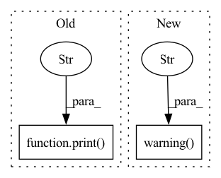

Pattern ID :14284
Before Change
self._count_finish += 1
elif self._count_reject == 8:
if self.verbose > 1:
print("reject, resetting jacobian" )
self.decision_history.append("reject")
self.L = min(1e-2, self.L / self.Lup**8)
self._count_reject += 1
else:After Change
self.lambda_history.append(np.copy((self.current_state + h).detach().cpu().numpy()))
if not torch.isfinite(loss):
AP_config.ap_logger.warning("nan loss" )
self.decision_history.append("nan")
self.rho_history.append(None)
self._count_reject += 1
self.L_up()In pattern: SUPERPATTERN
Frequency: 5
Non-data size: 2
Instances Fragment ID: 47362010
Project Name: connorstoneastro/autoprof
Commit Name: 10b2a7770d988d066380285137108a388ebd1bad
Time: 2023-01-14
Author: connorstone628@gmail.com
File Name: autoprof/fit/lm.py
M Class Name: LM
N Class Name: LM
M Method Name: step_method1(2)
N Method Name: step_method1(2)
M Parent Class: BaseOptimizer
N Parent Class: BaseOptimizer
M File Name: autoprof/fit/lm.py
N File Name: autoprof/fit/lm.py
M Start Line: 250
M End Line: 328
N Start Line: 251
N End Line: 317
Before Change
"seed":
rng.randint(1 << 31),
})
print("Config updates performed inside end2end" )
il_test_result = run_single_exp(il_test_ex_config, benchmark_config,
tune_config_updates, log_dir, "il_test")
report_experiment_result(il_test_result)After Change
log_dir: The log directory of current chain experiment.
rng, tune_config_updates = setup_run(config)
logging.warning("Completed setup_run" )
del config // I want a new name for it
// Run representation learning
tune_config_updates["repl"].update({ Fragment ID: 47362011
Project Name: humancompatibleai/eirli
Commit Name: f714ac9faf8f6c583cb69edf703d3b1f5008de7e
Time: 2020-11-06
Author: codywild@berkeley.edu
File Name: src/il_representations/scripts/pretrain_n_adapt.py
M Class Name: AnonimousClass
N Class Name: AnonimousClass
M Method Name: run_end2end_exp(6)
N Method Name: run_end2end_exp(6)
M Parent Class:
N Parent Class:
M File Name: src/il_representations/scripts/pretrain_n_adapt.py
N File Name: src/il_representations/scripts/pretrain_n_adapt.py
M Start Line: 234
M End Line: 234
N Start Line: 212
N End Line: 239
Before Change
"seed":
rng.randint(1 << 31),
})
print("Config updates performed inside end2end" )
il_test_result = run_single_exp(il_test_ex_config, benchmark_config,
tune_config_updates, log_dir, "il_test")
report_experiment_result(il_test_result)After Change
log_dir: The log directory of current chain experiment.
rng, tune_config_updates = setup_run(config)
logging.warning("Completed setup_run" )
del config // I want a new name for it
// Run representation learning
tune_config_updates["repl"].update({ Fragment ID: 47362014
Project Name: humancompatibleai/eirli
Commit Name: 4968f4a0ae6adcd59bec40c9dda9529abac41398
Time: 2020-11-06
Author: codywild@berkeley.edu
File Name: src/il_representations/scripts/pretrain_n_adapt.py
M Class Name: AnonimousClass
N Class Name: AnonimousClass
M Method Name: run_end2end_exp(6)
N Method Name: run_end2end_exp(6)
M Parent Class:
N Parent Class:
M File Name: src/il_representations/scripts/pretrain_n_adapt.py
N File Name: src/il_representations/scripts/pretrain_n_adapt.py
M Start Line: 234
M End Line: 234
N Start Line: 212
N End Line: 239
Before Change
rho = self.rho_2(np.nanmin(self.loss_history[:-1]), alpha_loss, h)
self.rho_history.append(rho)
if self.verbose > 1:
print("rho: " , rho.item())
if rho > self.epsilon4:
if self.verbose > 0:
print("accept")
self.decision_history.append("accept")After Change
self.lambda_history.append(np.copy((self.current_state + h).detach().cpu().numpy()))
if not torch.isfinite(loss):
AP_config.ap_logger.warning("nan loss" )
self.decision_history.append("nan")
self.rho_history.append(None)
self._count_reject += 1
self.L_up() Fragment ID: 47362012
Project Name: connorstoneastro/autoprof
Commit Name: 10b2a7770d988d066380285137108a388ebd1bad
Time: 2023-01-14
Author: connorstone628@gmail.com
File Name: autoprof/fit/lm.py
M Class Name: LM
N Class Name: LM
M Method Name: step_method2(2)
N Method Name: step_method2(2)
M Parent Class: BaseOptimizer
N Parent Class: BaseOptimizer
M File Name: autoprof/fit/lm.py
N File Name: autoprof/fit/lm.py
M Start Line: 339
M End Line: 424
N Start Line: 329
N End Line: 401
Before Change
installed = {pkg.key for pkg in list(pkg_resources.working_set)}
missing = required - installed
if missing:
print(f"Missing packages in order to display result in GUI. either run "pip install {" ".join(missing)}""
" or use "result.save_as_html()" to save result" )
return
from PyQt5.QtWebEngineWidgets import QWebEngineView // pylint: disable=import-outside-toplevel
from PyQt5.QtWidgets import QApplication // pylint: disable=import-outside-toplevel
After Change
installed = {pkg.key for pkg in list(pkg_resources.working_set)}
missing = required - installed
if missing:
get_logger().warning("Missing packages in order to display result in GUI. either run "pip install %s""
" or use "result.save_as_html()" to save result" , {" ".join(missing)})
return
from PyQt5.QtWebEngineWidgets import QWebEngineView // pylint: disable=import-outside-toplevel
from PyQt5.QtWidgets import QApplication // pylint: disable=import-outside-toplevel
Fragment ID: 47362029
Project Name: deepchecks/deepchecks
Commit Name: 918cc5e9a2035465648f16e1dd8b27e3a61b55a5
Time: 2022-06-14
Author: jonatan.lib@gmail.com
File Name: deepchecks/utils/display.py
M Class Name: AnonimousClass
N Class Name: AnonimousClass
M Method Name: display_in_gui(1)
N Method Name: display_in_gui(1)
M Parent Class:
N Parent Class:
M File Name: deepchecks/utils/display.py
N File Name: deepchecks/utils/display.py
M Start Line: 36
M End Line: 37
N Start Line: 36
N End Line: 57